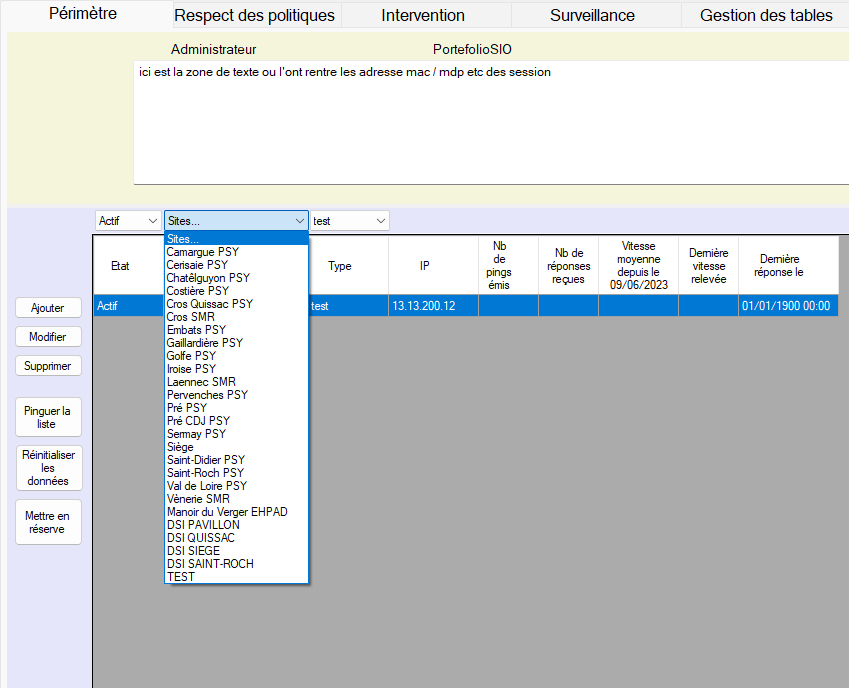
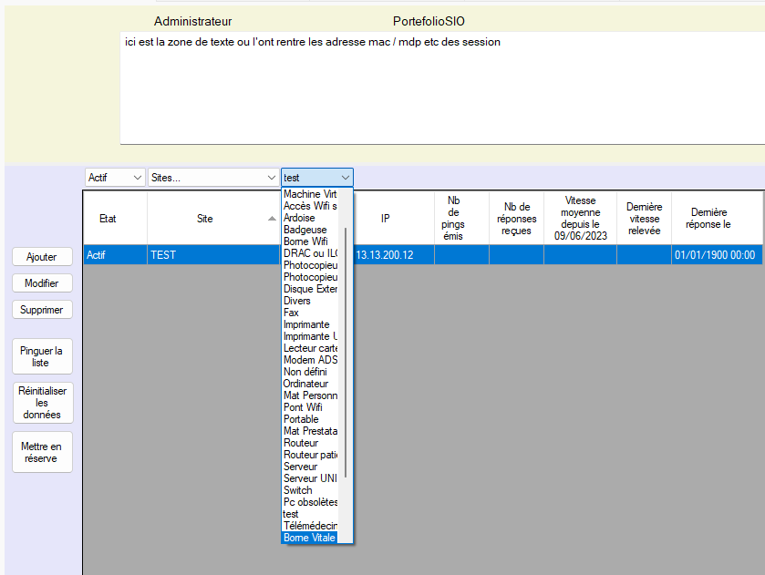
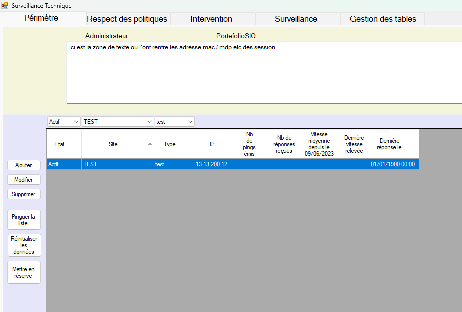

Nael TALBI
Informaticien en alternance • Clinique Montfleuri Saint Roch
Passionné par l'infrastructure réseau, la virtualisation et la cybersécurité, j'assure le support technique, l'administration Active Directory et le réseau sur un groupe hospitalier de 17 cliniques à Marseille.
Compétences SISR
Technologies et outils maîtrisés dans le domaine des systèmes et réseaux informatiques
Cisco CCNA
En coursRéseaux
Configuration et maintenance
pfSense
Sécurité
Firewall et VPN
Active Directory
Systèmes
Gestion d'identités
Proxmox
Virtualisation
Hyperviseur open-source
Linux/Windows
OS
Administration système
VLANs
Réseaux
Segmentation réseau
Explorez mon parcours
Formation BTS SIO
Découvrez le parcours BTS Services Informatiques aux Organisations
Projets Techniques
Déploiement automatisé en entreprise (script .bat) & laboratoire réseau BTS
Veille : Sécurité Zero Trust
Simulateur interactif : Testez en direct pourquoi le mot de passe seul ne suffit plus face aux cyberattaques
Mon Entreprise
Clinique Montfleuri (17 sites) & Logiciel ST
Tableau TCS
Compétences officielles BTS SIO SISR
Procédures Techniques
Proxmox Pools, pfSense VLAN/DHCP & Switch 802.1Q
À Propos de Moi
Étudiant passionné par l'administration des systèmes, les réseaux d'entreprise et la cybersécurité.
Nael Talbi
Alternant BTS SIO SISR • Marseille
Actuellement en 2ème année de BTS SIO option SISR (Solutions d'Infrastructure, Systèmes et Réseaux), je me spécialise dans la conception d'architectures réseau sécurisées, l'administration système et la gestion de la haute disponibilité.
Mon parcours en alternance m'a permis d'acquérir une rigueur opérationnelle forte face à des exigences concrètes de production : segmentation réseau par VLANs, gestion des droits Active Directory, automatisation de déploiement par scripts et conformité de sécurité.
Curieux, méthodique et passionné par les enjeux de défense des systèmes d'information, mon objectif après l'obtention du BTS est de poursuivre vers une formation d'Expert en Cybersécurité afin d'évoluer vers les fonctions d'Ingénieur Sécurité puis de Responsable de la Sécurité des Systèmes d'Information (RSSI).
Domaines de Compétences Techniques
Technologies et protocoles maîtrisés durant mon parcours
Adressage IPv4, segmentation VLANs 802.1Q, routage inter-VLAN, pare-feu pfSense/OPNsense, switchs managés Cisco & Netgear.
Windows Server 2022, Active Directory (AD DS), Stratégies de groupe (GPO), DHCP, DNS, Linux Debian/Ubuntu Server.
Hyperviseur Proxmox VE (Pools RBAC, Bridges vmbr), VMware ESXi, conteneurs LXC, auto-hébergement HomeLab complet.
Ticketing Jira & GLPI, outil interne de Surveillance Technique (ST) multisite, scripts batch d'automatisation PC.
Mon Entreprise d'Alternance
Présentation de la Clinique Montfleuri Saint Roch, de notre groupe de 17 établissements et de nos outils métiers internes.
Clinique Montfleuri Saint Roch
Établissement médical et de soins psychiatriques situé dans le 11e arrondissement de Marseille, la Clinique Montfleuri Saint Roch fait partie intégrante d'un réseau de 17 cliniques et établissements de santé.
En environnement hospitalier, l'informatique est un élément vital : la disponibilité du réseau conditionne l'accès en temps réel aux dossiers patients informatisés (DPI), aux ordonnances médicales et à la continuité des soins 24h/24 et 7j/7.
Strict respect de la confidentialité des données de santé, gestion des accès par le principe de moindre privilège sur Active Directory et cloisonnement étanche par VLANs.
Ma Journée Type en Entreprise
Surveillance Technique
Contrôle de l'outil interne centralisant les 17 cliniques : vérification des adresses IP, MAC et postes offline.
Ticketing Jira & GLPI
Traitement des demandes soignantes : déblocages Active Directory, sessions TSE et imprimantes ordonnances.
Déploiement Postes
Configuration de PC Windows 10/11 via nos scripts .bat, jonction au domaine AD et attribution des GPO.
Interventions Réseau
Brassage en baie réseau, diagnostic de ports sur switchs managés et vérification des VLANs soignants vs admin.
Documentation & Projets
Rédaction de fiches procédures, clôture des tickets résolus et optimisation de nos scripts .bat de déploiement automatique.
Notre Logiciel Interne de Surveillance Technique (ST)
Développé sur-mesure pour notre DSI, cet outil centralise le parc des 17 cliniques du groupe et permet de monitorer en temps réel les adresses IP, adresses MAC, la vitesse de réponse et l'état des machines.



Mes Certifications
Certifications techniques et attestations suivies en parallèle du BTS SIO SISR pour approfondir mes compétences en réseaux et cybersécurité.
Cisco Networking Academy (CCNA)
Réseaux, Commutation & Routage
Conception d'architectures réseau IPv4/IPv6, configuration de switchs et routeurs Cisco en CLI, segmentation par VLANs (802.1Q), Trunking et sécurisation des accès.
MOOC SecNumacadémie — ANSSI
Cybersécurité & Hygiène Informatique
Panorama de la SSI, sécurité de l'authentification (MFA/2FA), sécurité sur Internet et sécurité du poste de travail et du nomadisme.
MOOC Atelier RGPD — CNIL
Protection des Données Personnelles
Maîtrise des principes du RGPD, responsabilité des acteurs, durée de conservation et sécurisation des données sensibles (données médicales HDS en clinique).
Le BTS SIO & L'Option SISR
Services Informatiques aux Organisations — Parcours Solutions d'Infrastructure, Systèmes et Réseaux.
Option SISR
Solutions d'Infrastructure, Systèmes et Réseaux
Spécialisation dans la conception, la sécurisation, le déploiement et la maintenance des réseaux informatiques et des serveurs d'entreprise.
Option SLAM
Solutions Logicielles et Applications Métiers
Spécialisation dans le développement, l'intégration et la maintenance d'applications logicielles, web et mobiles.
Support & Services IT
Support aux utilisateurs, gestion du patrimoine et mise à disposition des services informatiques (soutenance sur portfolio).
Administration SISR
Conception et maintenance des infrastructures réseaux et systèmes réalisées en entreprise et en atelier.
Cybersécurité & Veille
Évaluation de la sécurisation des services et soutenance orale de la veille technologique.
Tableau de Synthèse (TCS)
Grille officielle des compétences acquises et validées durant mon alternance en clinique et en formation.
| Bloc | Compétence | Réalisations à la Clinique Montfleuri | Preuves associées |
|---|---|---|---|
| Bloc 1.1 | Gérer le patrimoine informatique | Suivi et inventaire du parc multisite (17 cliniques) via Surveillance Technique et GLPI. | Surveillance Multisite |
| Bloc 1.2 | Répondre aux incidents & assistance | Résolution quotidienne des tickets Jira/GLPI : comptes soignants Active Directory et périphériques. | Jira Service Desk |
| Bloc 1.3 | Travailler en mode projet | Conception d'un script Batch (.bat) d'automatisation pour le déploiement rapide et standardisé des postes clients. | Script Déploiement .bat |
| Bloc 2.1 | Concevoir une solution d'infrastructure | Segmentation réseau par VLANs (médical vs admin) et configuration des switchs managés. | Procédure VLANs |
| Bloc 2.2 | Déployer et tester une solution | Cloisonnement d'environnements virtualisés Proxmox (Pools, RBAC & SDN) et adressage réseau pfSense. | Procédures Proxmox & pfSense |
| Bloc 2.3 | Exploiter et superviser le réseau | Diagnostic de connectivité, brassage en baie et monitoring des liens entre les 17 sites. | Brassage & Câblage |
| Bloc 3.1 | Protéger les données personnelles | Application du moindre privilège sur Active Directory et conformité HDS (données de santé). | Habilitations AD GPO |
| Bloc 3.2 | Sécuriser les équipements et accès | Sécurisation du pare-feu pfSense (VLANs, WAN, DHCP) et isolation stricte des privilèges Proxmox. | Sécurité pfSense & Proxmox |
Mes Projets
Les projets et réalisations que je mène en entreprise (Clinique Montfleuri) et en formation (M2S Formation • Lab E6).
Projet en entreprise Épreuve E5
Mission et réalisation en alternance à la Clinique Montfleuri Saint-Roch (groupe de 17 cliniques)
Création d'un script .bat pour déployer les postes plus vite
Développement d'une suite de scripts Batch (.bat) interactifs et modulaires pour automatiser la masterisation, la configuration réseau, le renommage et l'intégration des postes clients dans l'Active Directory de la clinique.
Passage de 45 minutes par poste à moins de 8 minutes de configuration automatisée.
Affectation silencieuse dans la bonne Unité d'Organisation (OU) soignante ou administrative.
Attribution automatique des serveurs DNS internes du domaine et des routes réseau.
Activation du pare-feu, nettoyage du cache et application des règles de conformité santé.
Phases automatisées lors du lancement du script
Invite interactive demandant le service et l'ID inventaire pour appliquer le nommage officiel (ex: PC-ACCUEIL-01, PC-SOINS-03) via wmic computersystem.
Configuration via netsh pour pointer vers les contrôleurs de domaine Active Directory et vérifier la connectivité réseau avec le pare-feu.
Intégration du PC dans le domaine clinique.local dans l'OU cible avec un compte de délégation sans divulgation de mot de passe administrateur.
Installation sans intervention humaine des pilotes de lecteurs de cartes santé (CPS/Vitale), outils d'assistance à distance et navigateurs sécurisés.
Activation des règles du pare-feu local, nettoyage des scripts temporaires d'installation et planification d'un redémarrage propre pour validation.
Postes 100% identiques, zéro oubli humain et déploiement à grande échelle facilement déléguable aux techniciens de support.
Extrait fonctionnel du script Batch (deploy-poste.bat)
:: DEPLOIEMENT AUTOMATISE - CLINIQUE MONTFLEURI SAINT-ROCH
:: Auteur : Talbi Nael - BTS SIO SISR
:: ========================================================
@echo off
title Deploiement Automatique Poste Client
color 0A
echo [1/5] Renommage du poste client selon l'inventaire...
set /p PCNAME="Entrez le nom du PC (ex: PC-ACCUEIL-01) : "
wmic computersystem where name="%computername%" call rename name="%PCNAME%"
echo [2/5] Configuration des serveurs DNS internes Active Directory...
netsh interface ip set dns name="Ethernet" static 192.168.25.1
netsh interface ip add dns name="Ethernet" 192.168.25.254 index=2
echo [3/5] Jonction au domaine Active Directory clinique.local...
powershell -Command "Add-Computer -DomainName 'clinique.local' -OUPath 'OU=PostesClients,DC=clinique,DC=local' -Restart -Force"
Captures d'écran du script & du déploiement
Visualisation des étapes d'exécution en console et de la jonction Active Directory.
Capture 01 : Exécution du Script .bat
Menu interactif en console, saisie du nom de machine et déroulé des 5 étapes d'automatisation.
Capture 02 : Jonction Active Directory & Inventaire
Confirmation de la présence du PC dans l'OU Active Directory et validation des paramètres DNS.
Projets en formation BTS SIO SISR • Épreuve E6
L'infrastructure réalisée à l'école, documentée en ligne avec son schéma réseau et ses procédures
Dashboard & Schéma Réseau de l'Infrastructure
Documentation réseau de l’infrastructure : pare-feu pfSense, réseaux LAN et VLAN 25, service DHCP et serveur Active Directory.
pfSense / OPNsense, WAN en DHCP (192.168.50.40) ;
10.1.5.0/29, sans DHCP ;
Passerelle 192.168.25.254, DHCP de .100 à .200 ;
SRV-AD1EX1PLOT5, 192.168.25.1.
Mes procédures techniques détaillées
Retrouvez mes 3 fiches de procédures réelles pas à pas avec commandes CLI, tests de validation et documents PDF officiels.
Configuration & Segmentation VLAN sur Switch
Création des VLANs Soins / Admin / Invité, tagging 802.1Q sur port Trunk et association des ports Access.
Proxmox VE : Gestion des Pools & Permissions
Cloisonnement par Pools (Pool-SIO1/SIO2), utilisateurs, groupes et matrice complète des droits RBAC (VMs, datastores & ponts SDN).
pfSense : Interfaces WAN, VLANs & Serveur DHCP
Configuration en console TUI réalisée par Talbi Nael : adressage IP WAN, création du sous-interface VLAN (re2.24) et plage DHCP.
La Sécurité Informatique : Le Modèle "Zero Trust"
La philosophie fondamentale de la cybersécurité moderne : "Ne jamais faire confiance par défaut, toujours vérifier chaque accès" (Never Trust, Always Verify). Pourquoi ce modèle a remplacé la sécurité traditionnelle et comment il répond directement aux menaces actuelles.
1. Pourquoi avoir créé le modèle Zero Trust ?
Pendant des années, la sécurité reposait uniquement sur la frontière extérieure de l'entreprise : un gros pare-feu faisait office de muraille, et un mot de passe unique servait de clé d'entrée.
Tout utilisateur ou ordinateur situé à l'intérieur du réseau local (ou connecté par VPN) bénéficiait d'une confiance aveugle et totale.
Dès qu'un attaquant réussissait à piéger un employé par un faux email (phishing) ou une clé USB infectée, il franchissait la muraille et se retrouvait à l'intérieur du château.
Sans cloisonnement interne, le pirate pouvait rebondir de poste en poste, voler les identifiants administrateurs et déployer un ransomware sur l'ensemble des serveurs.
Créé initialement par John Kindervag (Forrester Research) et formalisé par le NIST (SP 800-207) et l'ANSSI, le modèle Zero Trust inverse le paradigme : il faut partir du principe que le réseau interne est déjà infiltré. Qu'un utilisateur soit assis au bureau ou chez lui, aucun accès n'est accordé sans vérification stricte, explicite et continue.
2. L'Essentiel des Technologies Zero Trust
Le Zero Trust repose sur 4 piliers technologiques complémentaires à connaître pour l'épreuve E6 :
Double Authentification (MFA / 2FA)
Un mot de passe seul peut être deviné ou volé. L'authentification multifacteur exige une validation supplémentaire sur smartphone (application TOTP ou push).
Moindre Privilège & ZTNA
Chaque employé ne reçoit que les accès strictement indispensables à sa tâche (RBAC). Le ZTNA remplace le VPN classique en ouvrant l'accès application par application, et non à tout le réseau.
Micro-segmentation (VLANs & Pare-feu)
Découpage du réseau local en compartiments isolés (VLANs 802.1Q et règles pfSense) : séparation étanche entre postes soignants, serveurs médicaux et Wi-Fi invités.
Audit Continu & Détection (SIEM / EDR)
Inspection permanente de l'état de santé du poste (antivirus actif, mises à jour) et analyse en temps réel des journaux d'événements pour détecter les anomalies de comportement.
3. En quoi le Zero Trust est-il directement lié au climat actuel ?
Fin du Périmètre Physique
Avec l'explosion du télétravail, du nomadisme et des solutions Cloud (Microsoft 365), les soignants et employés accèdent aux ressources depuis chez eux. Le bureau physique n'existe plus comme barrière de sécurité. Le Zero Trust permet de sécuriser chaque accès où que se trouve l'utilisateur.
Ransomwares Ciblant la Santé
Ces dernières années en France, des dizaines d'établissements de santé (hôpitaux de Dax, Versailles, Corbeil-Essonnes, Armentières) ont été paralysés par des rançongiciels, menaçant la vie des patients. En milieu médical comme à la Clinique Montfleuri, le Zero Trust empêche la propagation d'un virus d'un PC vers les serveurs de soins.
Directive NIS 2 & Normes ANSSI
Entrée en vigueur en 2024-2025, la directive européenne NIS 2 ainsi que les exigences de l'ANSSI et de la certification HDS (Hébergement de Données de Santé) obligent légalement les établissements de santé à adopter le MFA, le moindre privilège et le cloisonnement réseau étanche sous peine de sanctions lourdes.
Synthèse Comparative : Sécurité Traditionnelle vs Zero Trust
Ce qu'il faut retenir pour expliquer l'intérêt du Zero Trust à l'oral du BTS SIO SISR.
| Critère de Sécurité | Sécurité Classique (Périmétrique) | Sécurité Moderne (Zero Trust) |
|---|---|---|
| Connexion utilisateur | Simple mot de passe statique | Mot de passe + Validation MFA sur smartphone |
| Confiance réseau | Totale dès qu'on est sur le réseau interne ou en VPN | Zéro confiance implicite, vérification à chaque requête |
| Droits d'accès | Larges permissions accordées par défaut | Moindre privilège strict (RBAC & ZTNA granulaire) |
| En cas d'infection d'un PC | Le virus se propage à tout le réseau (mouvements latéraux) | Le PC est confiné dans son VLAN, serveurs protégés |
Simulateur : Testez une Cyberattaque en Direct !
Choisissez la méthode de sécurité, déclenchez une attaque et observez la différence en direct pour l'oral.
1. Poste Soignant
192.168.10.45 • Bureau de consultation
2. Contrôle de Sécurité
Vérification basique (Sans 2FA)
3. Serveur Central Médical
10.0.0.50 • Base des Dossiers Patients
Sélectionnez un test pour voir si l'attaque réussit ou est bloquée.
Ce test montre pourquoi un mot de passe ne suffit plus aujourd'hui et pourquoi la double authentification (2FA) et le cloisonnement réseau sont indispensables.
4. Comment je réalise ma veille technologique
Une démarche structurée en 4 étapes appliquée tout au long de mon parcours BTS.
S'informer (Flux RSS)
J'utilise l'application Feedly pour recevoir automatiquement les alertes et actualités de cybersécurité chaque semaine.
Sources officielles
Je consulte les bulletins d'alerte du CERT-FR, de l'ANSSI et de Cybermalveillance.gouv.fr pour surveiller les vulnérabilités critiques.
Tester en pratique
Sur mon HomeLab personnel (pfSense / Proxmox VE), je configure des VLANs pour tester le cloisonnement et les règles de blocage des flux.
Appliquer en clinique
À la Clinique Montfleuri, je participe au déploiement de l'authentification forte (MFA), à la sensibilisation au phishing et à l'isolation des réseaux médicaux.
Me Contacter
Une question sur mon parcours ou une opportunité d'échange ? N'hésitez pas à me laisser un message.